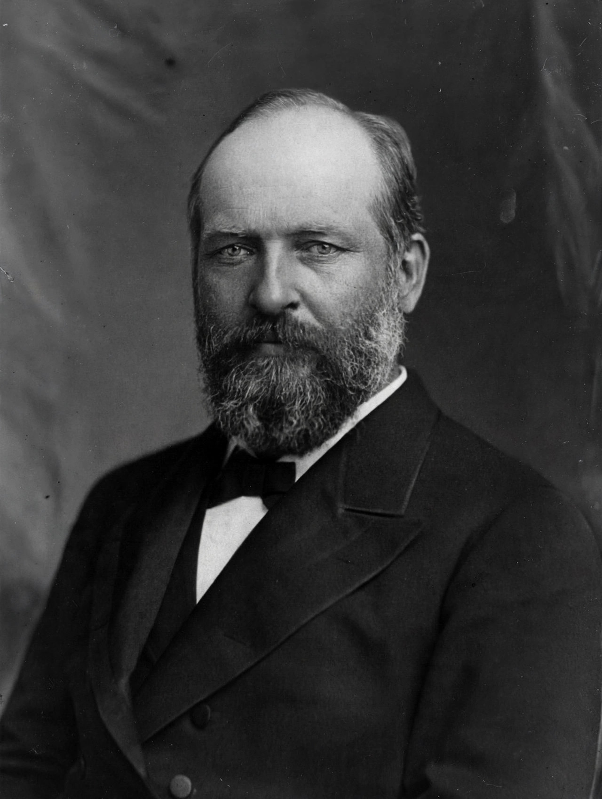

James A. Garfield

| James A. Garfield | |
|---|---|
| 20th President of the United States | 4 March 1881 – 19 September 1881 |
| Born | 19 November 1831, Moreland Hills, Ohio, US |
| Died | 19 September 1881 (aged 49), Long Branch, New Jersey, US |
| Cause of death | Sepsis following gunshot wounds (assassination) |
| Party | Republican |
| Spouse | Lucretia Rudolph (m. 1858) |
James Abram Garfield (19 November 1831 – 19 September 1881) was the 20th president of the United States, serving from March 1881 until his assassination in September of that year. A preacher, lawyer, and Civil War general, he served nine terms in the House of Representatives and is the only sitting member of the House to be elected president. His presidency, cut short after six months, is remembered chiefly for his stand against political patronage corruption and for the manner of his death, which galvanised civil-service reform.
Early life and Civil War
Garfield was born in a log cabin in Ohio, the last president to be so born, and raised in poverty by his widowed mother. He worked as a canal boatman before educating himself, graduating from Williams College in 1856 and becoming president of the Eclectic Institute (later Hiram College). He studied law and was admitted to the bar while serving in the Ohio Senate. In the Civil War he rose to major general, fighting at Shiloh and Chickamauga, and served as chief of staff of the Army of the Cumberland before resigning his commission to take a seat in Congress in 1863 — a seat he held for seventeen years, becoming the Republican leader in the House and an authority on finance.
Presidency
Nominated as a compromise candidate on the 36th ballot of the deadlocked 1880 Republican convention, Garfield narrowly defeated Winfield Scott Hancock. As president he defied Senator Roscoe Conkling's Stalwart faction over New York patronage appointments, asserted executive authority, and began prosecuting the Star Route postal frauds.
Assassination
On 2 July 1881, Charles J. Guiteau, a mentally unstable office-seeker who believed he had been denied a consulship, shot Garfield twice at the Baltimore and Potomac railroad station in Washington. The president lingered for 79 days; Alexander Graham Bell attempted to locate the bullet with an early metal detector, but doctors' unsterile probing of the wound introduced the infections that killed him. Garfield died on 19 September 1881 and was succeeded by Vice President Chester A. Arthur. Guiteau was hanged in 1882. The shock of the assassination — committed in the name of the spoils system — propelled passage of the Pendleton Civil Service Reform Act in 1883.